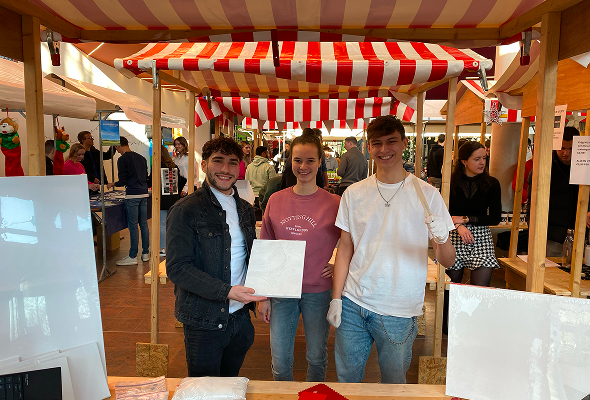
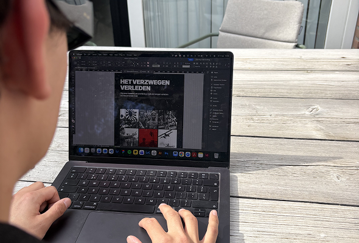
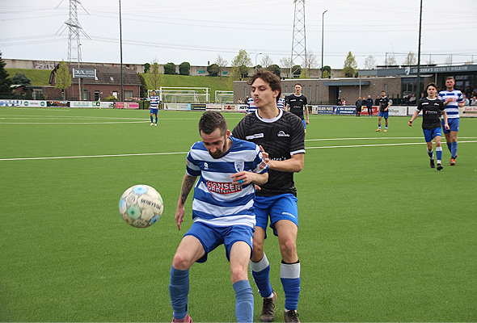

ABOUT ME

BAS | GREEFKES
I’m Bas Greefkes
Communication & Multimedia Design Student
Hello, I am Bas Greefkes, 21 years old and I am currently in my 2nd year of my Communication & Multimedia Design course.



Before starting CMD, I studied Commercial Economics for two years, where I discovered that my real interest lies in the creative side. I explored this further during the Student Company project, where I started my own business selling plaster art. During this project, I was responsible for the branding and website hosting, which I really enjoyed.
During my CMD studies, I found myself increasingly drawn to visual design, working on projects such as web design, social media content, and branding. I enjoy working with Adobe Creative Cloud programs and Figma, and I am eager to further develop my skills in these areas.


Alongside my studies, I play football at Urmondia, and I have been doing so since I was seven years old. I enjoy being active and spending time with my team. I also like watching football in my free time, and I support Fortuna Sittard.